2007年2月25日～3月17日 台湾自転車ツーリング Part1
2007年の2月～3月、大学のサイクリングクラブ合宿で台湾を自転車ツーリングした。合宿が始まる前には、合宿ルートの下見を兼ねて1週間ほど1人でも走った。
ただし残念ながら、写真の元データが入ったHDDが当時クラッシュしてしまい、1人で走った部分については低画質・低解像度の写真しか残っていない。
2007年2月25日 桃園国際空港～（タクシー）～桃園駅
日本アジア航空（日本航空系の、日本が承認していない台湾へ飛ぶための会社）の飛行機で桃園国際空港に到着。
成田で自転車を段ボールに入れて梱包したのだが、重量が重くなりすぎてしまい、結局段ボールをほとんど捨てて、輪講袋だけの状態にした。台湾に到着して自転車を組み立てると、アウターチェーンリングが曲がっていた。チェーンリングをモンキーレンチで曲げなおして、とりあえず走ることができるようにした。
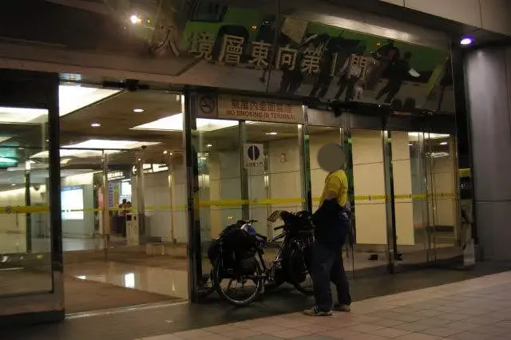桃園国際空港から走り始めたのだが、どう見ても高速道路に入り込んでいる様子だったので引き返した。深夜なのでとくに危険はなかった。
2007年は、まだ桃園国際空港の捷運（地下鉄）は開通していなかった。まだ台湾高鉄も開通するかしないかの時期。
ということで、結局タクシーで台鉄の桃園駅まで移動した。桃園駅前のネカフェに泊まった。
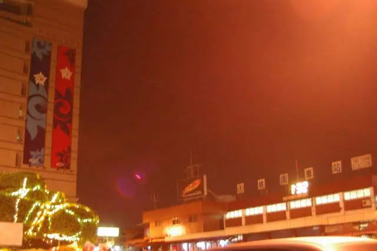2007年2月26日 桃園駅～（列車）～嘉義駅～阿里山中腹
朝の桃園駅。青い色の客車の「復興号」（ふっこうごう、準急列車）で嘉義駅まで移動した。この旅行中、列車の切符を買うときは旅行ガイドの余白に区間と列車名を書いて、指差しで行った。
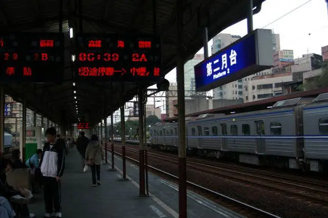さて、写真がないのだが嘉義駅で自転車を組み立てて出発。嘉義市内はほとんど観光しなかった。旅行ガイドには嘉義公園が書いてあったので寄ってみたが、単なる公園だったのでほとんどなにも見ずスルーした。嘉義で自転車店を見つけて、鉄製の中古チェーンリングを売ってもらって交換した。
阿里山の中腹まで行って南下した。
2007年2月27日 阿里山中腹～甲仙（高雄県）
朝の写真。たしか山の中腹にある道教？の廟の境内にテントを張って寝た気がする。
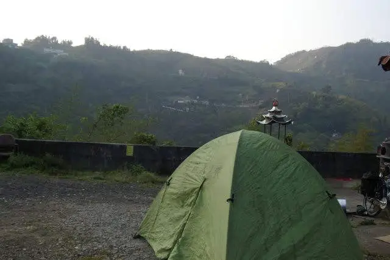阿里山の原住民の像。
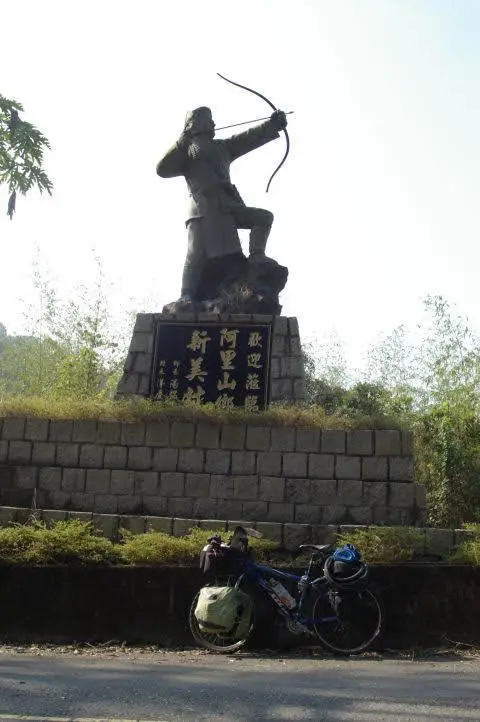前年の九州旅行もそうだったが、この年の台湾も水害の跡があった。河川敷の仮設道路を走る。
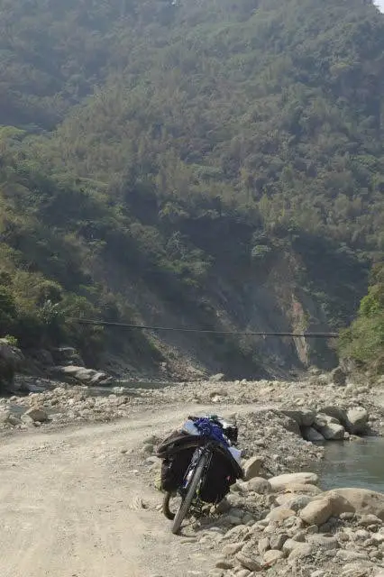台南県に入る。
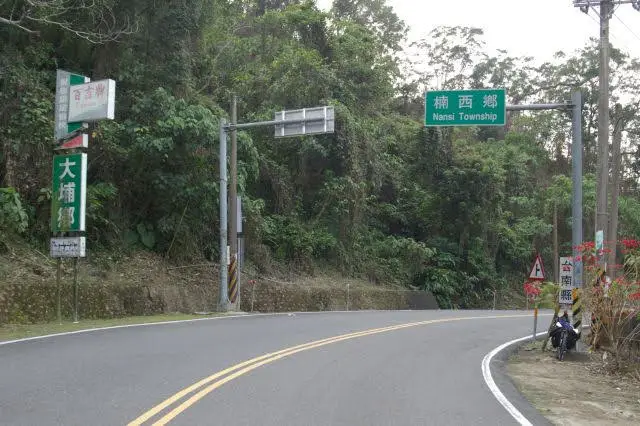ネカフェ。当時は海外で携帯電話を使うのがとても高額だったので、ネカフェに入って大学サイクリングクラブの同級生と定時連絡をした。

ガビガビの写真だが、台湾省道台20線と台21線の重複区間と書かれている。Wikipediaによるとこのあたりは2014年に廃止or台29線に編入されているらしく、おそらく甲仙あたりだと思われる。
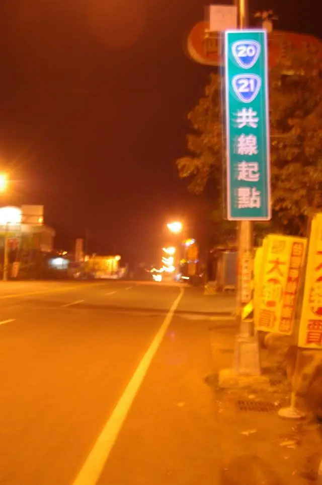2007年2月28日 甲仙（高雄県）～桃源郷
高雄県甲仙のなにかの建物の軒先を借りて野宿した。
当時は高雄県甲仙だったが、その後高雄県は高雄市となっている。
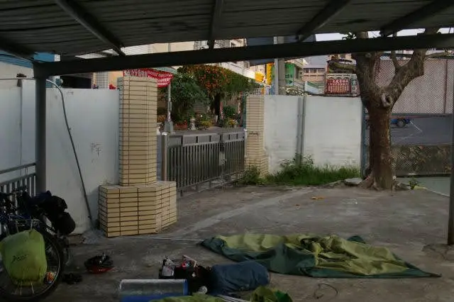甲仙の街並み。
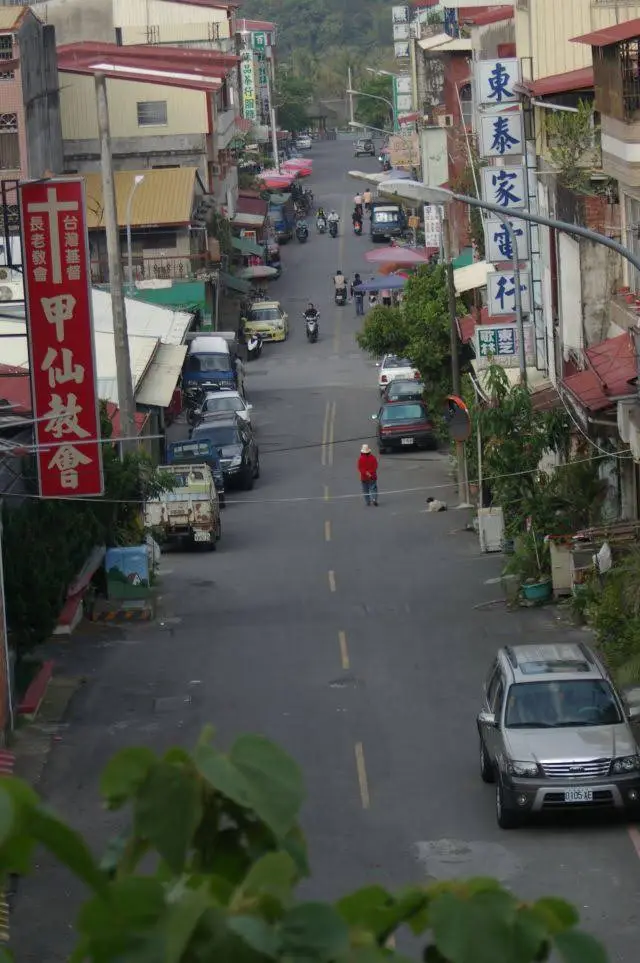甲仙から、台湾南部の山脈を貫く「南部横貫公路」に入っていく。
途中、仏教寺院があった。
検索したところ、このお寺は甲仙の「白雲寺」のようだ。
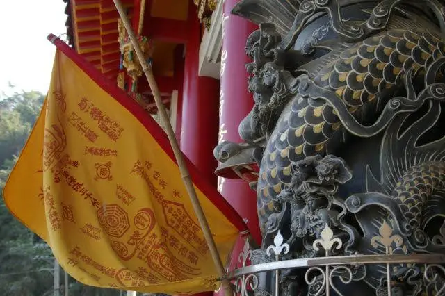ここは大学サイクリングクラブの合宿でも通ったので高解像度の写真がある（2007年3月8日撮影）。
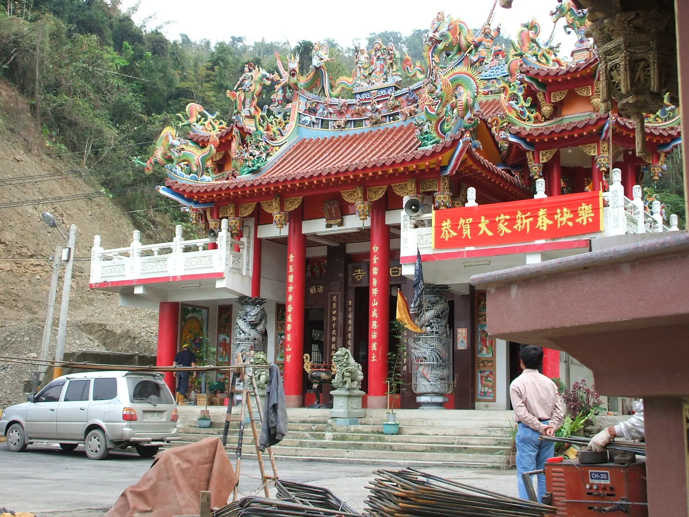連続カーブ64km。これからどんどん深い山に分け入っていく。
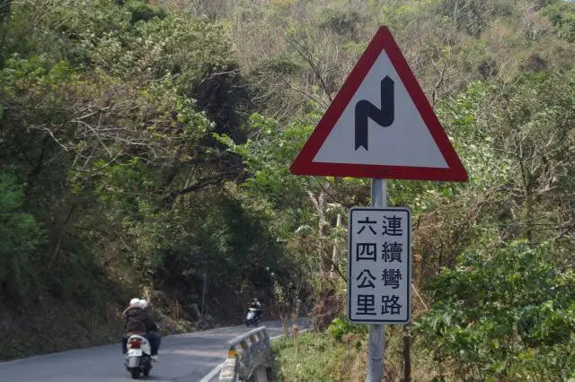南部横貫公路の高雄側ほぼ最後の集落、「桃源郷」（高雄県）についた。この地名はアルカディアというわけではなく、「桃源」という名前の「郷」（村という意味）である。
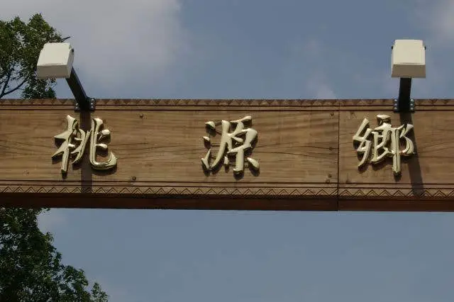このあたりにはたくさんの吊り橋があった。写真はないが、床が木のこのような吊り橋をバイクに乗ったおじさんが走っていくのも見た。

玉山国家公園。
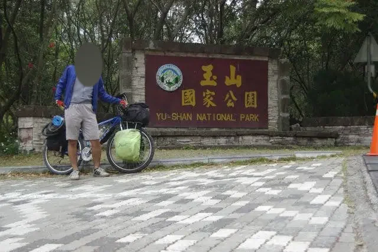桃源郷の街並み。
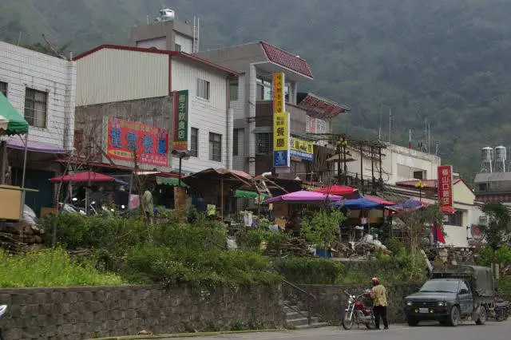この日は桃源郷で野宿した。
2007年3月1日 桃源郷（高雄県）～埡口（台東県）
本格的に南部横貫公路の上りにかかっていく。大学サイクリングクラブの合宿の下見を兼ねていたので、かなり時間をかけて走った。
野犬がついてきた。
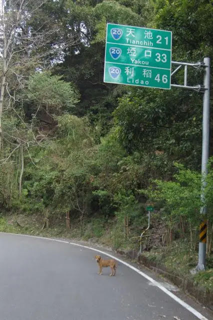画質が悪いが高雄県の山地の風景。
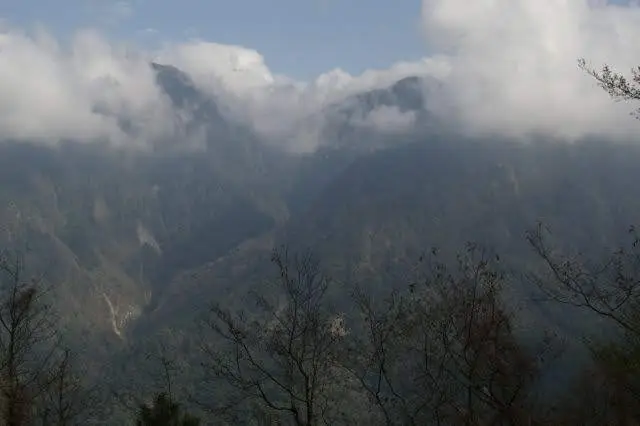天池という観光地。標高2280m。地元のサイクリストと記念撮影。
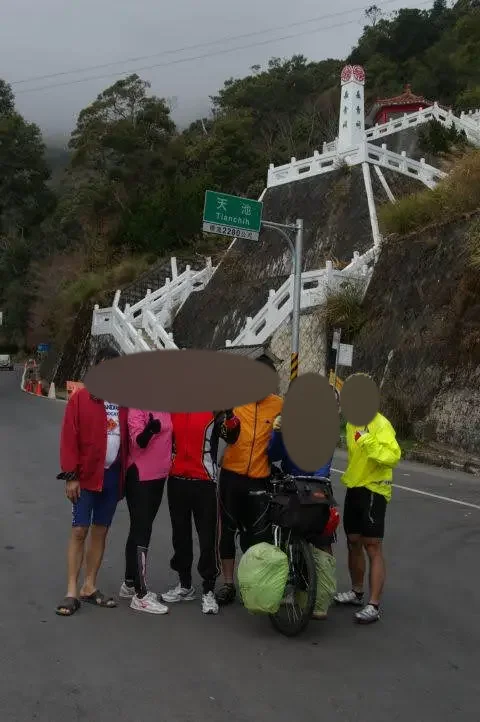さらに進んでいく。天池を過ぎると車もほとんど来なくなった。
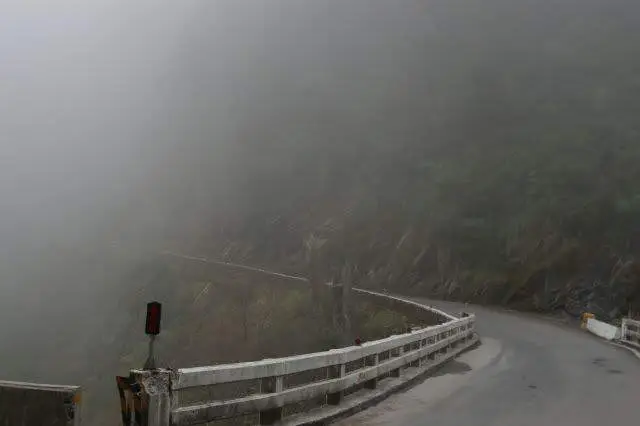南部横貫公路の峠、「埡口」（ya1 kou3）に到着。標高は2727m。
峠はトンネルになっている。そして、すでに陽が落ちかけていた。
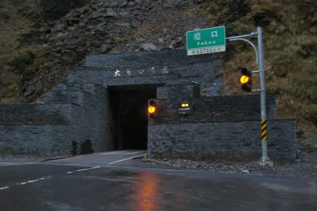
この日は、峠のトンネルを抜けて少し下った台東県側にあるユースホステルに泊まった。
2007年3月2日 埡口（台東県）～富里～（列車）～台東市
翌朝。深い山の中を下っていく。
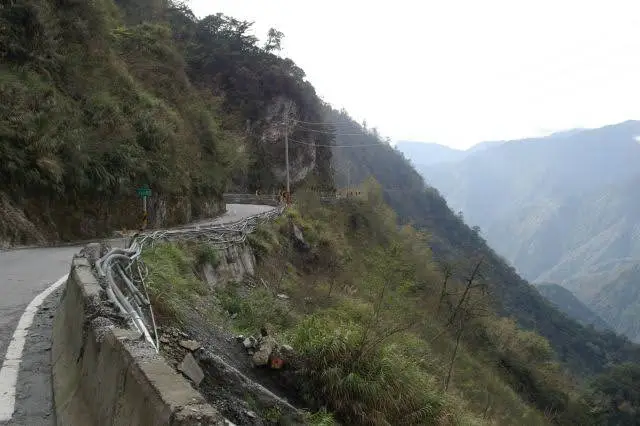 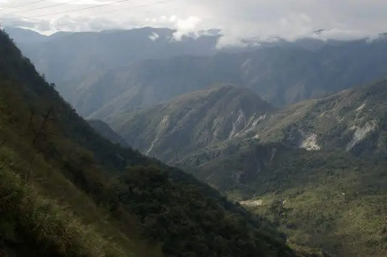前の晩、ユースホステルで一緒に泊まった地元（台東市）の大学生ライダーがバイクで追いついてきた。記念撮影。
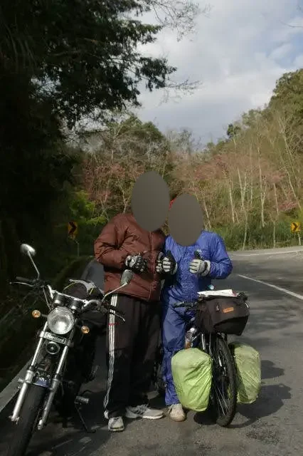南部横貫公路の台東側は、本当にすごい場所に集落がある。
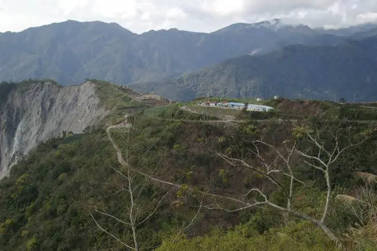 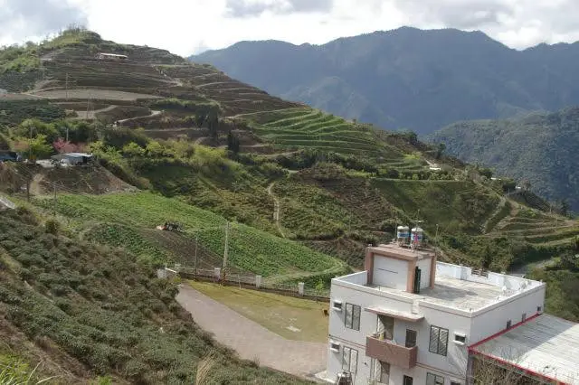これは途中にある「利稲」という集落だったと思う。
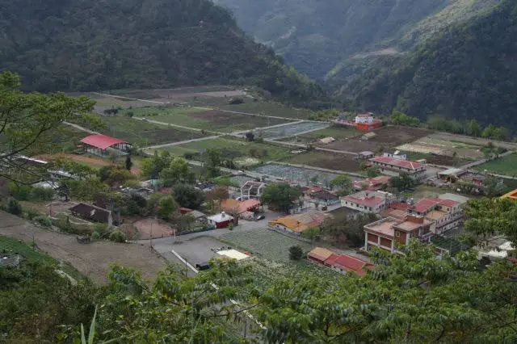自分の自転車。このときは大学サイクリングクラブの備品を持っていく係だったのでサイドバッグを4つ付けている。
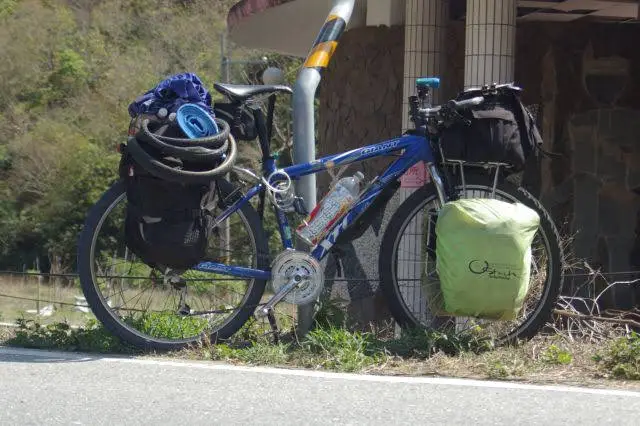台湾料理。
南部横貫公路を下りきると、台東県の「池上」という場所に出る。池上は台湾島有数の米どころで、池上米というブランド米で有名。
このあとどうしようか迷ったが、とりあえず台東駅まで輪行することにして、このあたりでは大きな駅だった富里駅で自転車を分解した。
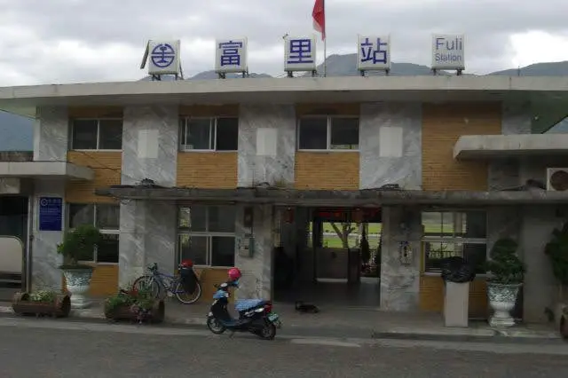 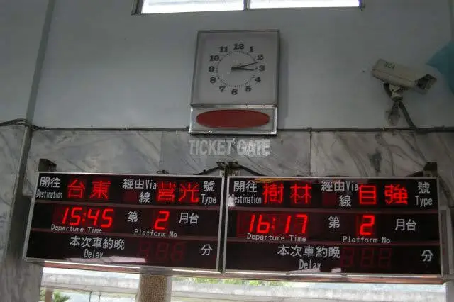富里駅に入ってくる莒光号（きょこう号、急行列車）。
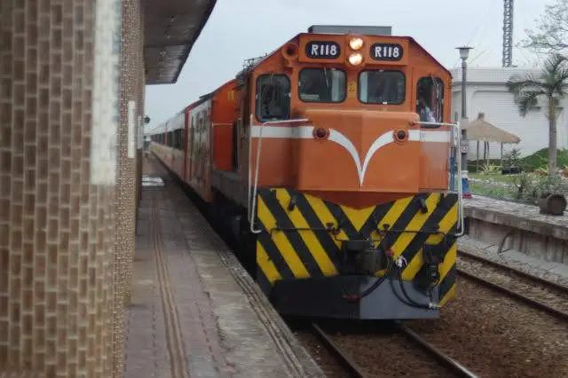台東駅に着いたのだがトラブル。その先の南廻線に乗り換えるつもりで、自転車をホームに置いたまま改札口へ向かった（自転車が非常に重いため）。というのも、列車別の切符だったので、一旦改札を出て、台東から先への切符を買う必要があった。
ところが、南廻線のちょうどいい列車がなかった。ということは台東駅で下車したいのだが、自転車はホームに置いたままだ。結局駅員につたない中国語と英語、身振り手振りで事情を話して、職員通路から回収させてもらった。
この日は台東市で野宿した。この写真は、移転前の台東旧駅。台東駅は、南廻線が開通し、東部幹線と繋がったときに街はずれの台東新駅に移動した歴史がある。台東新駅の周りは空地だらけだった。
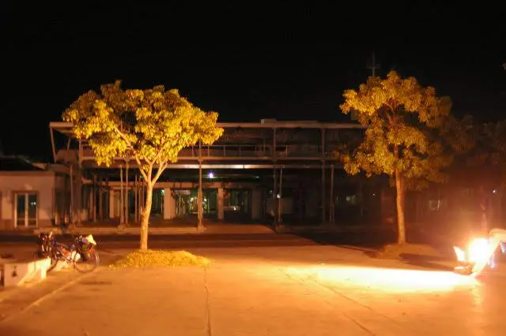台東市街地の貼り紙。
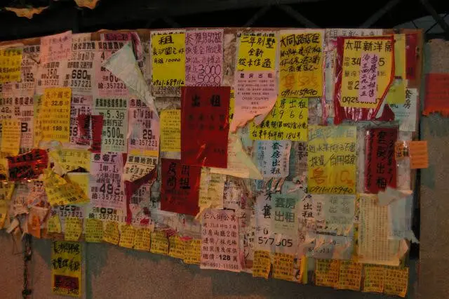2007年3月3日 台東市～（列車）大武～恒春
朝の台東駅。
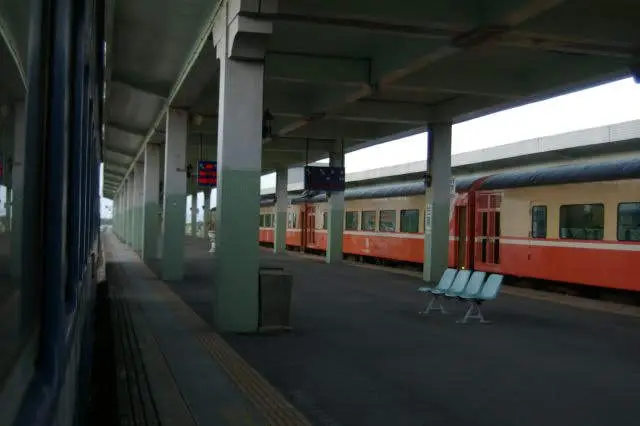旧型の客車列車（普快）で、台東駅から大武駅まで輪行で移動した。
この列車はドアが手動で、車掌から「危ないからデッキに出るな」と怒られた。おそらく日本の鉄道マニアが訪れることが多かったのだろう。
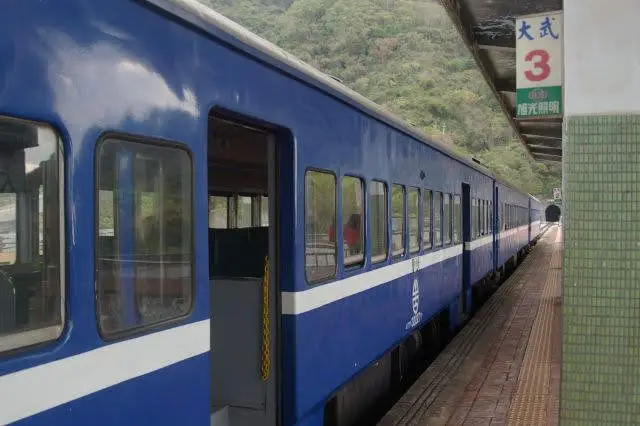大武駅。
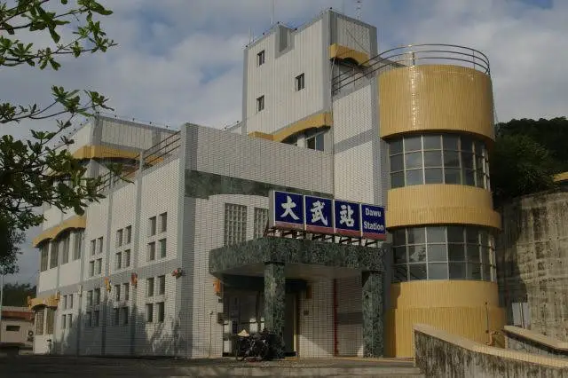大武駅から走り始める。大武駅から少し海沿いに走り、台湾省道台9号線で山越えにかかる。
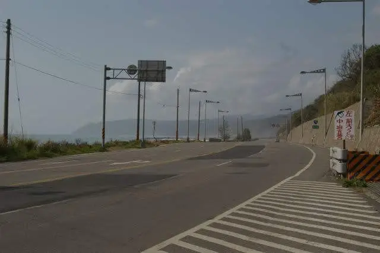台9号線沿いにあった、福徳宮という寺院。
調べたところ、この場所はいまは高架のバイパス新道が通っているらしい。自分が走ったときは九十九折れの旧道だった。
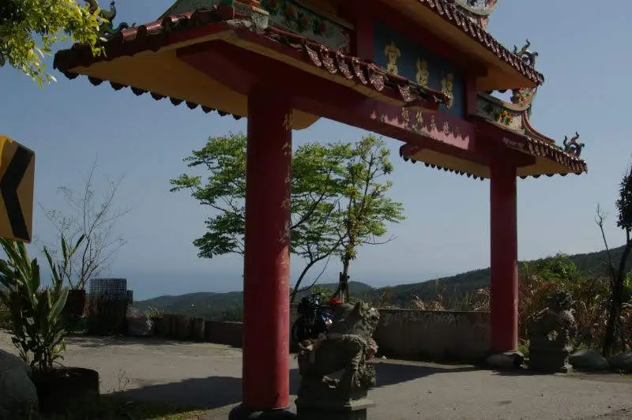台東県と屛東県の県境に到着。
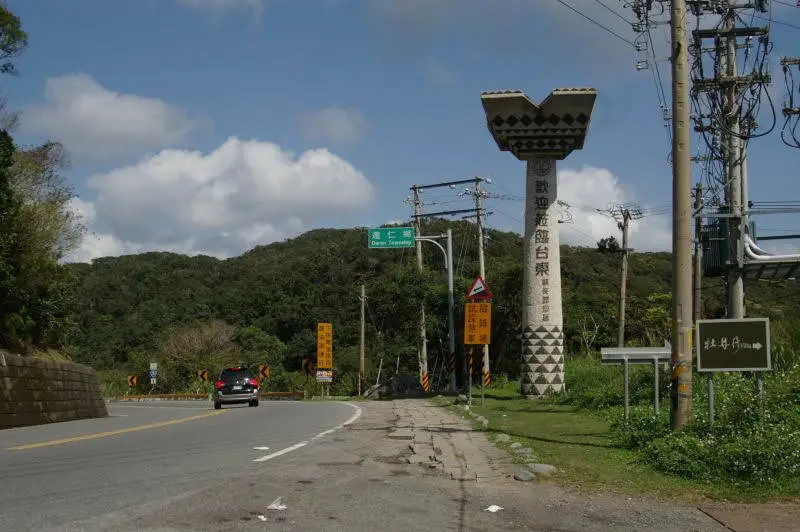この県境からそのまま台9号線を屏東へ進まずに、峠で分岐して尾根沿いに南下する県道（現在の名称で県道199号線らしい）に入っていった。
その県道を進んでいくと、四重渓温泉という温泉地がある。ここの公衆浴場で入浴した。
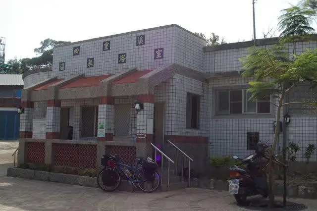四重渓温泉の風景。
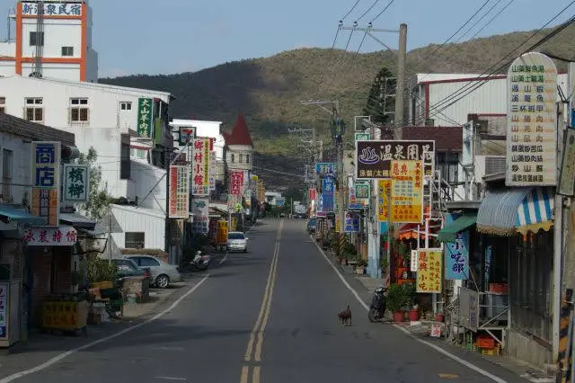そして、県道を海岸付近まで下りきり、少し南に進むと、台湾最南端の街「恒春」（heng2 chun1）に到着。
恒春は、台湾島で唯一城壁が現存する街として有名。小さな町だが、ローカルな雰囲気でとても良い場所だった。
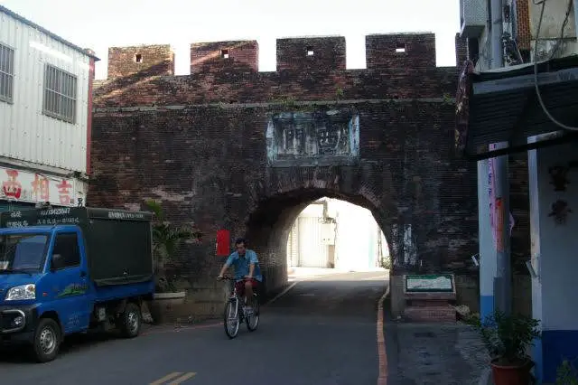恒春の街並み。
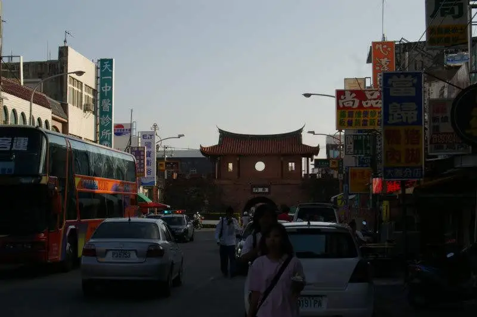 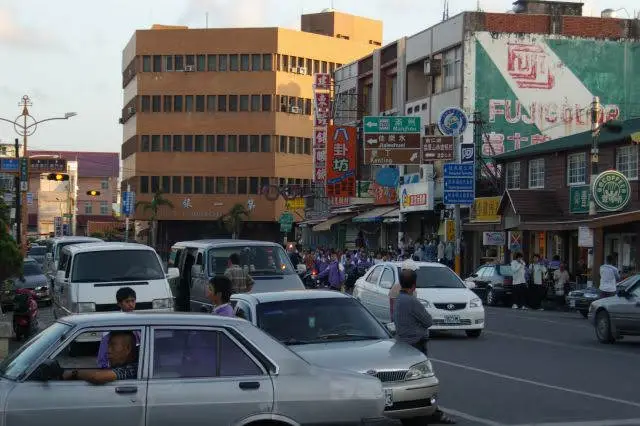恒春の南門。
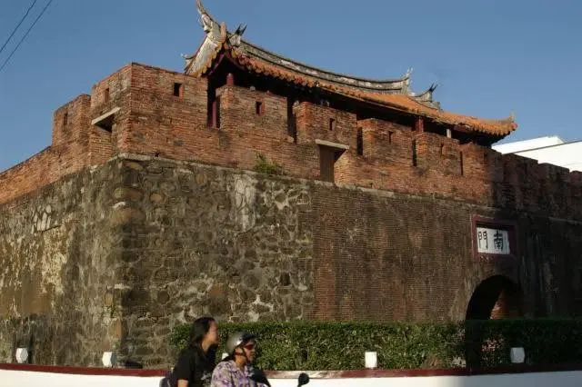城壁の上。

恒春の城壁で記念撮影。
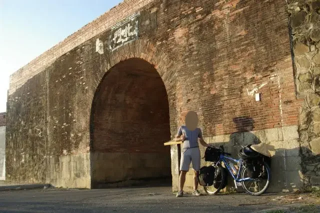戦車が展示されていた。
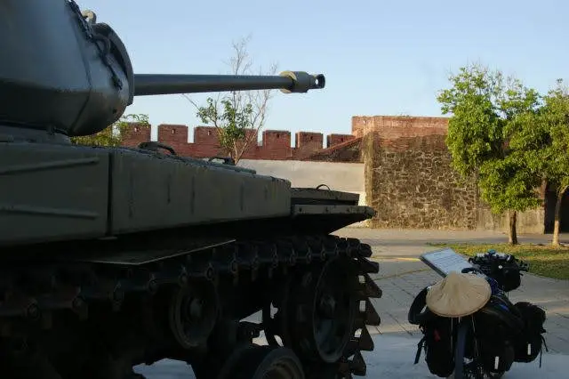恒春では、台湾名物のマンゴーかき氷を食べた。
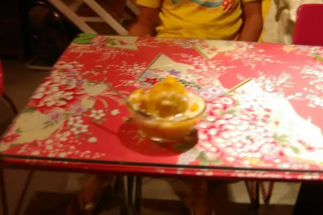地元のサーファーかつDJの人たちが家に泊めてくれた。お酒もおごってくれた。このあたりは台湾有数のリゾートで、サーファーもたくさんいる。
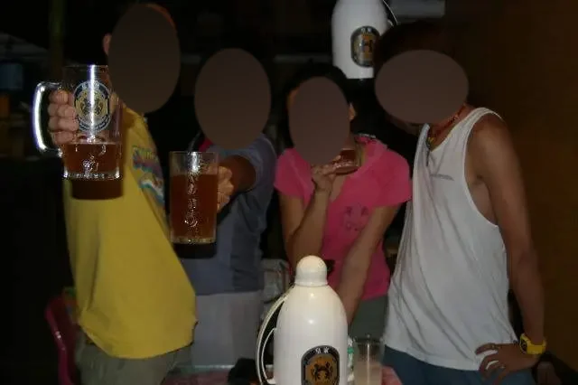2007年3月4日 恒春・墾丁観光～（バス）～高雄駅
この日は恒春市街から少し先にある、台湾島最南端の観光地「墾丁」（ken3 ding1）を観光した。
墾丁の海岸。そして奥にある原発。
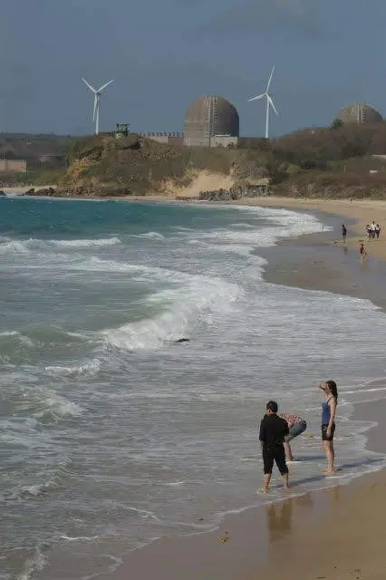有名な「船帆石」という巨岩。
台湾最南端の岬や灯台にも行ったはずなのだが、写真が行方不明。たしかHDDクラッシュ後にもあったはずなのだが……。
恒春に戻ってくると、夜はお祭りだった。2007年の春節は2月18日らしいので、春節の祭りではないようだ。何の祭りだったのだろう。
爆竹もあった。
屋外映画も上映されていた。
お祭りを周ったあと、大学サイクリングクラブの合宿の集合日が近づいてきたので、自転車を分解してバスに積み込んで、恒春から高雄駅まで一気に深夜移動した（恒春には鉄道がない）。
夜中に高雄駅前についてネカフェを探そうとレンタルバイク屋に聞いたところ、連れて行ってやるといわれた。面倒なので自転車を輪行袋に入れたままだったのだが、なんと、自分に輪行袋をかつがせて、そのままバイクの後ろに乗せて連れていってくれた。
2007年3月5日 高雄駅～（列車）～水里駅（南投県）
高雄駅から莒光号（きょこう号）に乗った。このときすでに高雄駅は新しい駅に建て替えられていた。
途中の二水駅で莒光号を下車。ローカル線の集集線に乗り換える。
放送は中国語しかなかったので、二水駅で降り損ねないようにかなり神経を使った。
二水駅にて、集集線のディーゼルカー。
水里駅（南投県）で大学サイクリングクラブの部員と合流した。水里では駅の近くに皆で野宿した。
集集線をあと1駅行くと、終点かつ台湾大地震で有名な集集駅があったのだが、このとき行かなかった。いま思えば行けばよかった。
Part2は写真の画質がマシになります。
2026年1月21日記事公開